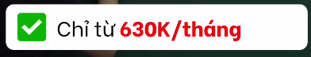
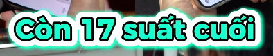
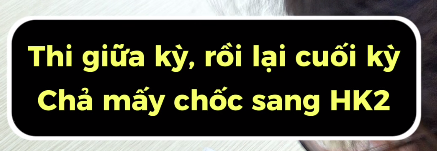
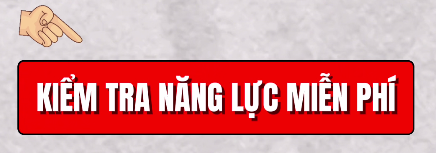
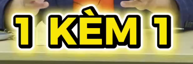
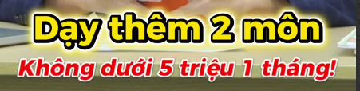
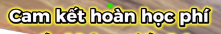
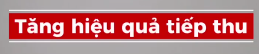
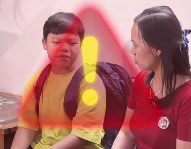
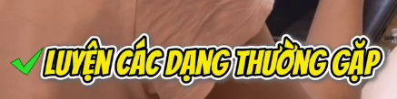

TC-T01 Thẻ trắng + tick xanh

Nền trắng bo góc, chữ đen; từ/số chính màu đỏ, tick xanh. Dùng cho lợi ích, xác nhận; không sao chép giá trong ảnh.
Note trong brief: Text: TC-T05 · motion: pop ngắn · vị trí: giữa thân dưới mặt. Mỗi video chọn 2–3 mẫu chữ. Nội dung trong ảnh chỉ là tham khảo hình thức.
TC-T01 Thẻ trắng + tick xanh
Nền trắng bo góc, chữ đen; từ/số chính màu đỏ, tick xanh. Dùng cho lợi ích, xác nhận; không sao chép giá trong ảnh.
TC-T02 Sticker xanh mint
Chữ xanh mint, viền đen trong, viền trắng dày ngoài, glow mint. Dùng cho thông báo ngắn.
TC-T03 Box đen viền trắng
Chữ vàng sáng trên box đen bo góc, viền trắng. Hai dòng gọn; dùng khi brief chọn mẫu này.
TC-T04 CTA đỏ + tay chỉ
Box đỏ viền đen, chữ trắng condensed đậm; tay chỉ nhẹ. Dùng cho CTA.
TC-T05 Chữ vàng ba lớp viền
Chữ vàng đậm, viền đen dày, trắng ngoài, glow vàng nhẹ. Dùng cho hook, số và keyword lớn, không có nền box.
TC-T06 Hai tầng vàng–đỏ
Dòng chính vàng/viền đen/trắng, dòng phụ đỏ nghiêng/viền trắng. Hai tầng là một cụm, không thêm hai box.
TC-T07 Chữ trắng glow vàng
Chữ trắng, viền đen và halo vàng; gọn một dòng, dùng cho cam kết có trong nội dung.
TC-T08 Dải đỏ kẹp hai đường trắng
Nền đỏ chữ trắng đậm, đường trắng mảnh phía trên/dưới. Dải ôm nội dung, xuất hiện theo ý; không giữ như footer.
TC-FX01 Cảnh báo halo đỏ/vàng
Overlay icon cảnh báo, không phải mẫu chữ. Nhấp nhẹ một lần; giữ mặt nhìn được, không hàm ý chẩn đoán nhân vật.
TC-T09 Tick xanh + chữ vàng nghiêng
Tick xanh, chữ vàng đậm hơi nghiêng với viền đen/trắng. Dùng cho hành động hoặc lợi ích.